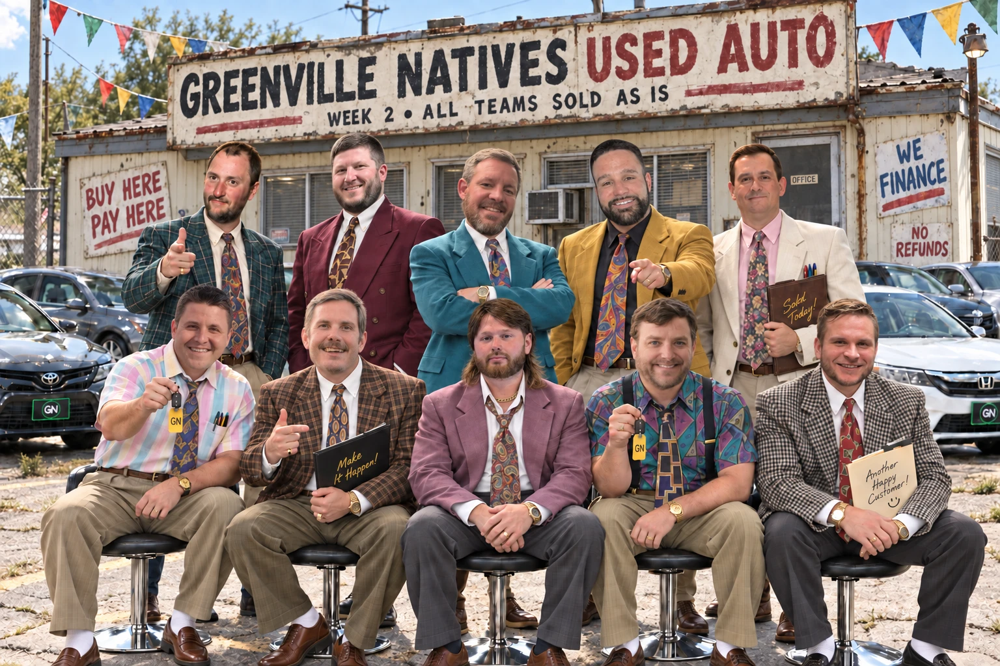

High miles, bad paint, and every owner thinks his piece of shit is worth more than it is.

130.6WEEK 2 HIGH · HUDSON OVER WAIVERS
58.8SEASON LOW · THE DEFENDING CHAMP
3.0CLOSEST GAME · HUDSON 130.6, WAIVERS 127.6
Two weeks in and the standings are already lying to us. The leading scorer in the league is 1-1 and the guy sitting fourth in points is 0-2. Two of the four undefeated teams have had the softest schedules in the league and a .500 power record to go with it. And the defending champion has scored fewer points than anybody. It's early. It's also not that early.
I added next week's matchup previews at the bottom this week, head to head history, the margin marks and the position comparison for all five Week 3 games. The mark definitions are down there too, since half of you have been guessing at what a slug fest is for about ten years.
Since somebody always says it's early, I went back through all 17 completed seasons, 2009 through 2025, 172 team seasons, top four make the playoffs. Starting 2-0, teams have made the playoffs 27 out of 44 times, 61.4 percent. Starting 1-1, 31 of 85, 36.5 percent. Starting 0-2, 10 of 43, 23.3 percent. So it's early, sure, but going 2-0 has been worth roughly two and a half times what 0-2 is worth, and the biggest cliff in the whole thing is between 2-0 and 1-1. One loss in September has historically cost a team about 25 points of playoff odds.
Sunday is the fork in the road. Get to 3-0 and you're at 61.9 percent, basically where you already were, so the reward for the undefeated teams is mostly just not falling off. Fall to 2-1 and it's a coin flip at 50 percent, which is the same as saying the season starts over for you. The 1-1 teams are the ones with something real to gain: win and you're at 50, lose and you're at 1-2 and 27.6 percent. And for the four of you sitting at 0-2, the math says one of you makes the playoffs. Win Sunday and you're at 27.6. Lose and you're 0-3 and down to 20 percent, which is 5 teams out of 25 in seventeen years, and I'd bet none of them enjoyed October.
Start
Made playoffs
Rate
After Week 3
Rate
2-0
27 of 44
61.4%
3-0 · 13 of 21
61.9%
1-1
31 of 85
36.5%
2-1 · 34 of 68
50.0%
0-2
10 of 43
23.3%
1-2 · 16 of 58
27.6%
0-3 · 5 of 25
20.0%
This week's theme is used sedans. Every one of you is a four-door with a story. Rankings come straight off the power rankings sheet, so if you don't like where you're parked, take it up with the math.
01 / THE RESULTS
Week 2 scoreboard
Winner
Pts
Loser
Pts
Margin
T Wood
91.3
Cody Clodfelter
58.8
32.5
Trey Wilder
111.9
Lee Galt
99.0
12.9
Mark Potter
106.6
Taylor Hardee
94.5
12.1
Ian Baro
96.7
Shain Collins
92.2
4.5
Josh Hudson
130.6
Michael Waivers
127.6
3.0
02 / POWER RANKINGS
Power rankings after Week 2
Rk
Manager
Record
PF
Power
Chg
1
T Wood
2-0
247.1
90.3
▲1
2
Mark Potter
2-0
241.9
89.1
▲1
3
Trey Wilder
2-0
221.1
84.9
▲1
4
Ian Baro
2-0
203.8
81.5
▲1
5
Taylor Hardee
1-1
264.7
73.8
▼4
6
Josh Hudson
1-1
219.3
64.3
▲2
7
Michael Waivers
0-2
232.5
47.0
▼1
8
Shain Collins
0-2
188.7
38.2
▼1
9
Lee Galt
0-2
171.3
34.7
▲1
10
Cody Clodfelter
0-2
145.0
29.4
▼1
03 / THE WRITE-UP
What's on the lot
Tier 1: Front row
Washed, waxed, and parked where people can see them.
1
Wood Chrysler 300 With a Bentley Grille
2-0 · Power 90.3 ▲1 · Beat Clod 91.3–58.8
LOOKS EXPENSIVE. ISN'T.
Wood is 2-0. He is still thanking Clod for not keeping JSN. He has the second most points in the league, and he has also had the softest schedule in the league by a mile: 163.7 points against, the fewest of anybody. His power record is 9-9, which is a fancy way of saying that against an average schedule this team is .500 and the chrome is doing the rest. CWCaleb Williams being out for next week was a big blow to the Wood household. Wood might have him back this week and he might be down a quarterback for a month, and right now nobody including Wood knows which. That's the thing about buying the shiny one off the lot: the paperwork shows up later. JSN and Gibbs are a lethal combo. He's also quietly four wins deep going back to last year, and if he beats Potter on Sunday it's his first five game winning streak since 2019. All four 2-0 teams are paired off this week, Wood and Potter on one side and Ian and Trey on the other, so two of us are walking out of Sunday at 3-0 and two of us are getting a reality check. Wood trails his 11-12. We're about to find out if that grille is bolted to anything.
Bentley grille. Chrysler everything else.
2
Potter Toyota Corolla, 280,000 Miles
2-0 · Power 89.1 ▲1 · Beat Rex 106.6–94.5
YES, THE PRICE IS FIRM.
The man with the most championships in this league is a Corolla, and that tracks. Everybody knows what Potter is (it rhymes with few). He's 2-0 with a 13-5 power record, tied for the best in the league, which means he'd be winning games against almost anybody's schedule. He beat the highest scoring team in the league without PNPuka Nacua, who sat out Week 2, and the only question that matters for Potter's season is how long that lasts. A week and it's a footnote. A month and the Corolla is running around on a donut like everybody else. Either way it says something: six starters in double figures, nobody had to go off for 40 to keep it moving, and he won anyway. Keeping DHDerrick Henry is aging like a Toyota. He also picked up his old friend Alvin Kamara. He gets Wood this week, one of two matchups between 2-0 teams, and the closest series on the schedule at 12-11, one game separating them after twenty-three tries.
Boring as hell. Never broke down once.
3
Trey Beige Camry
2-0 · Power 84.9 ▲1 · Beat Lee 111.9–99.0
STARTS EVERY SUNDAY.
I'm 2-0 and I have nothing to brag about except that I haven't had a bad week yet. 109.2 and 111.9, which is the highest floor in the league and the least impressive stat a man can lead. JCJames Cook at 1.03 went from a disaster to 20.4 in a week, so the first round is starting to look less stupid. I'm streaming defenses because I don't have a real one, and it's finally paid off: I dropped the Rams after they gave me a single point and the Patriots handed me 21. My bench is three rookie receivers I keep waiting on and a tight end I benched at exactly the right time, which I'd like noted in the record. MarShawn Lloyd is running away with bust of the draft, and I'm the idiot holding the title. He's the rattle you can hear from the back seat and can't find no matter how many panels you pull off. Ian's 11-4 against me all-time. I'm 4-11. Two 2-0 teams, one of us starts 3-0, and I have learned nothing in fifteen tries.
Nobody steals a beige Camry. Nobody's beaten one yet either.
Tier 2: Test drive required
Looks good from the street. Let's get it up to highway speed.
4
Ian Honda Accord on the Donut
2-0 · Power 81.5 ▲1 · Beat Shain 96.7–92.2
CHECK THE TRUNK.
Ian's teams always find a way. Seventh in the league in points, first in the standings, and I've quit calling it luck. The man doesn't chase, doesn't panic and doesn't beat himself, and that's the whole thing right there: he drives the speed limit in the right lane while the rest of us are trying to pass on a double yellow and end up in the ditch. The schedule has been kind, 164.5 against and second fewest in the league, but somebody still has to win the games. His keepers are carrying it. JTJonathan Taylor looks like a top three back again, and JJJustin Jefferson has already had a 27 point week in him, which should terrify the rest of us. Everywhere else there's a decision waiting to be made. KPKyle Pitts has two points in two weeks at tight end and DADavante Adams dropped 35.5 from the bench, the highest bench scorer in the league thus far. There's a good team in here if he ever pops the trunk. He gets me this week, the other 2-0 against 2-0 game, and he owns me with a 11-4 record, so I assume the Camry ends up in a ditch.
Pop the trunk, Ian.
5
Rex Dodge Charger Hellcat
1-1 · Power 73.8 ▼4 · Lost to Potter 94.5–106.6
PLEASE STOP REVVING IT.
Nobody has more points than Rex and nobody swings harder. 170.2 one week, 94.5 the next, and the drop from first to fifth is the biggest in the league. That's how the roster is built: Bijan, KWKenneth Walker, Olave, everything hits at once or nothing does. He is hoping to get his third round pick BBBrock Bowers after starting DKDalton Kincaid for one week before he made the first trade of the year, shipping DKDalton Kincaid and PWParker Washington to Shain for ZFZay Flowers. That's selling a high end tight end who just outscored three of your starters, plus a receiver who could finish as a high end WR2, for a player that is battling a hamstring injury. He didn't fix the engine, he changed what the exhaust sounds like. Last week he ran into Potter's Corolla and lost. This week he gets the defending champion, a series he trails 9-13.
Fast as hell. Pointed at a tree.
6
Hud Crown Vic Police Interceptor
1-1 · Power 64.3 ▲2 · Beat Waivers 130.6–127.6
FORMER POLICE VEHICLE. STILL CHASES PEOPLE.
Hud has had 297.8 points thrown at him in two weeks, the most in the league, and he's still 1-1. This thing has been rammed from every angle and it keeps running everybody down. JCJa'Marr Chase went from a total no-show to 23 and the receiver room is now the best part of the car, with Amon-Ra putting up 30.7 and his keeper finally waking up. Chase and Amon-Ra were both keepers, and that's the whole build: pay up front for the two best receivers you can get and live with whatever the rest of the roster turns out to be. The problem is tight end, where he left Isaiah Likely and 23.8 points on the bench in Week 1 and has been guessing ever since. Fix that and this is a playoff team. He gets Lee this week, who owns him 14-9 with a +324.8 point differential, the widest gap of any series on the schedule.
Built to get hit. Still runs everybody down.
Tier 3: Check engine light on
It's probably nothing. It's never nothing.
7
Waivers BMW M5, Check Engine Light On
0-2 · Power 47.0 ▼1 · Lost to Hud 127.6–130.6
IT'S PROBABLY JUST A SENSOR.
Fourth in the league in points and 0-2. Best Loser both weeks. A 12-6 power record, which means almost any other schedule has this team sitting at 2-0 and everybody would be calling it the best roster in the league. JAJosh Allen has been the best player in fantasy so far and CeeDee and CMC are doing their part. But it isn't all the schedule. He started the Eagles defense with the Steelers on his bench and lost by three, and CLColston Loveland has scored a total of 0.8 points in two weeks and is neck and neck with MarShawn Lloyd for bust of the draft, a factory option nobody should have paid for. He did inherit something last week though: he's now the sole owner of the league record for fewest five game losing streaks, and he's currently on a four game skid, so he's got a real chance to hand that trophy right back. He gets Shain this week, both winless, a series he leads 14-10. Somebody is finally going to feel good on Sunday.
Beautiful car. Every Sunday another fucking light comes on.
8
Shain Chevy Malibu, Former Rental
0-2 · Power 38.2 ▼1 · Lost to Ian 92.2–96.7
FORMER RENTAL. NO QUESTIONS.
Four hundred previous drivers, none of them gave a shit, and every button does something different than it says. AJAshton Jeanty went from 29.7 to 8.3. JWJaylen Waddle went from nothing to 17.8. ZFZay Flowers went for 23.5 in Week 1 then sat out Week 2. ABAJ Brown is on IR and he will be starting his third tight end in 3 weeks, drafted HFHarold Fannin then MAMark Andrews off the wire, now DKDalton Kincaid, who he got from Rex along with PWParker Washington for ZFZay Flowers. I don't hate it. He turned a guy who has had hamstring injuries constantly throughout his career into a top five tight end option and a receiver who was putting up points on somebody else's bench. It's the first time all year his lineup looks like it was built on purpose. He also dropped $46 of his $100 FAAB on Jalen Coker, which is half the budget in September. The next closest bid was $20. That's putting a $4,000 stereo in a rental car. The fantasy gods must be shining down on Shain as he put in a bid of $26 on Jonah Coleman days after drafting him. Fortunately for him, Lee also bid $26. A 5-13 power record says this isn't bad luck, it's a roster that hasn't figured out what it is. He gets Waivers this week, the other 0-2, in a series he trails 10-14. Somebody's season starts Sunday and somebody's is in real trouble. And while we're here: Shain has never won five games in a row. Not once, not in any season, not ever.
Don't ask what happened in the back seat.
9
Lee Nissan Altima
0-2 · Power 34.7 ▲1 · Lost to Trey 99.0–111.9
RUNS BETTER THAN IT LOOKS. LATELY.
Lee has now lost five in a row going back to last year, only the second time that's happened to him, and the loss last week cost him his share of the league record for fewest five game losing streaks. Waivers owns that one by himself now, and he's sitting on four straight, so it's up for grabs again. Lee also has the worst luck score in the league at -7.2, and then lost both of his quarterbacks in the same week, Dart and Daniels, which is the kind of thing that only happens to a man driving an Altima. 99 points last week would have beaten five teams in this league; it just didn't beat me. His first pick is warming up and GKGeorge Kittle is somehow still upright. The problem is the ceiling. 171.3 points is ninth, and he hasn't had a week yet where the whole lineup shows up at once. Good news: he gets Hud, a man he has beaten senseless for years, 14-9 with seven blowouts.
Did everything right and still got hit at the light.
Tier 4: Bring a trailer
We mean that literally.
10
Clod Chevy Cavalier, Parts Only
0-2 · Power 29.4 ▼1 · Lost to Wood 58.8–91.3
RAN WHEN PARKED. ALLEGEDLY.
The defending champion is 1-17 against the field through two weeks. Not 1-17 in games, 1-17 in hypotheticals, meaning if he'd played everybody every week he would have beaten one of them one time. That is the worst two week start anybody's had since Potter opened 2022 at 0-18, and Potter wasn't coming off a title when he did it. The 58.8 is the second lowest score of his career, and the only one worse is the 49.7 he put up in Week 5 of 2023. His starting receivers and his defense combined for -0.5 points, which as best I can tell might be the least any team in this league has ever gotten out of those spots at one time. He has 145.0 points, the fewest in the league, and last week his best player was his kicker. The decision to not keep JSN and instead draft SBSaquon Barkley had many scratching their heads on draft night and thus far he's given Clod 11 points in two weeks. Nabers and DMDJ Moore injuries have not helped his cause, and TKTravis Kelce sat on the bench with 20.6 while a worse tight end started. He gets Rex this week in a series he leads 13-9, which is the best news he's had all year, and it still might not matter.
Don't insure it. Just tow it.
04 / WEEK 2 AWARDS
Superlatives
Fully LoadedHighest score, Hud over Waivers130.6
Sold As-IsLowest score, Clod (season low)58.8
Runs Great, Still a LemonBest loser, Waivers, two weeks running127.6
Rolled-Back OdometerWorst winner, Wood over Clod91.3
TotaledBlowout, Wood over Clod by32.5
Fender BenderClosest game, Hud over Waivers by3.0
V8 of the WeekMVP, JAJosh Allen, QB (Waivers)40.7
Check Engine LightLVP, Chiefs D/ST (Wood)-2.0
Spare in the TrunkBest bench score, DADavante Adams (Ian)35.5
T-Boned by an Uninsured DriverUnluckiest team, Lee-7.2
05 / ALL-LEAGUE LINEUP
The starting nine
Pos
Player
Manager
Pts
QB
JAJosh Allen
Michael Waivers
40.7
RB
JTJonathan Taylor
Ian Baro
27.2
RB
KWKenneth Walker
Taylor Hardee
20.8
WR
JSJaxon Smith-Njigba
T Wood
38.0
WR
CLCeeDee Lamb
Michael Waivers
31.3
Flex
ABAmon-Ra St. Brown
Josh Hudson
30.7
TE
DKDalton Kincaid
Taylor Hardee
19.0
D/ST
Patriots
Trey Wilder
21.0
K
Harrison Butker / Brandon Aubrey
Ian Baro / Cody Clodfelter
16.0
06 / SEASON TO DATE
Odometer check
264.7Most points for · Taylor Hardee
145.0Fewest points for · Cody Clodfelter
297.8Most points against · Josh Hudson (toughest schedule)
163.7Fewest points against · T Wood (softest schedule)
07 / NEXT WEEK
Week 3 matchup previews
Head-to-head history, matchup marks and position comparison for every Week 3 game. Blank source values remain blank.
227.9All-time Week 3 high score · Shain Collins
47.1All-time Week 3 low score · Shain Collins
Matchup marks, defined
Buzzer Beater
Win or loss by less than 1
Nail Biter
Win or loss by more than 1, less than 5
Dunked On
Win or loss by more than 20
Blow Out
Win or loss by more than 40
Slug Fest
Combined score over 250
Pillow Fight
Combined score under 180
Ian Baro4th · 2-0 · PF 203.8 · PA 164.5
VS
Trey Wilder3rd · 2-0 · PF 221.1 · PA 185.2
Both 2-0, and Ian owns me: 11-4 all-time with three nail biters. One of us is leaving the corner office.
Head-to-head · the history
(11-4)Overall Record(4-11)
73%Winning %27%
(10-4)Regular Season Record(4-10)
(1-0)Playoff Record(0-1)
1675.7Points Scored1666.6
150.3High Score139.8
55.2Low Score76.9
111.7PPG111.1
102.7Regular Season PPG102.7
238.5Playoff PPG228.5
0Current Winning Streak1
6Longest Winning Streak1
Matchup marks · the margins
0Buzzer Beater0
3Nail Biter0
0Dunked On1
2Blow Out1
1Slug Fest0
4Pillow Fight0
9.1Point Dif-9.1
37.8Max Point Dif33.7
Position comparison
ARAaron Rodgers 37.8QB33.7 Patrick MahomesPM
JTJonathan Taylor 82.6RB47.7 Saquon BarkleySB
MEMike Evans 86.5WR39.8 Davante AdamsDA
RGRob Gronkowski 16.3TE14.1 TJ HockensonTH
Lee Galt9th · 0-2 · PF 171.3 · PA 219.0
VS
Josh Hudson6th · 1-1 · PF 219.3 · PA 297.8
Lee is +324.8 on Hud all-time, the biggest point differential of any matchup this week, with seven blowouts to Hud's one.
Head-to-head · the history
(14-9)Overall Record(9-14)
61%Winning %39%
(13-9)Regular Season Record(9-13)
(1-0)Playoff Record(0-1)
2748.9Points Scored2424.1
152.5High Score146.5
69.8Low Score51.8
119.5PPG105.4
112.7Regular Season PPG100.7
269.7Playoff PPG208.7
0Current Winning Streak2
6Longest Winning Streak4
Matchup marks · the margins
1Buzzer Beater1
0Nail Biter1
2Dunked On5
7Blow Out1
3Slug Fest0
2Pillow Fight3
324.8Point Dif-324.8
79.3Max Point Dif54.9
Position comparison
PMPatrick Mahomes 79.3QB54.9 Russell WilsonRW
NCNick Chubb 69.0RB43.0 DeVon AchaneDA
JJJustin Jefferson 71.7WR85.2 JaMarr ChaseJC
TKTravis Kelce 58.4TE40.8 Darren WallerDW
Michael Waivers7th · 0-2 · PF 232.5 · PA 286.4
VS
Shain Collins8th · 0-2 · PF 188.7 · PA 232.0
Both 0-2, so somebody finally gets a W. Shain holds both the all-time Week 3 high and low, so pick your Shain.
Head-to-head · the history
(14-10)Overall Record(10-14)
58%Winning %42%
(13-9)Regular Season Record(9-13)
(1-1)Playoff Record(1-1)
2788.7Points Scored2794.6
145.9High Score153.4
72.0Low Score66.3
116.2PPG116.4
107.3Regular Season PPG105.2
214.2Playoff PPG239.7
2Current Winning Streak0
5Longest Winning Streak3
Matchup marks · the margins
0Buzzer Beater0
0Nail Biter1
6Dunked On5
1Blow Out2
2Slug Fest0
3Pillow Fight3
-5.9Point Dif5.9
50.2Max Point Dif56.4
Position comparison
JAJosh Allen 75.2QB49.5 Brock PurdyBP
CMChristian McCaffrey 71.9RB22.5 James ConnerJC
SDStefon Diggs 56.5WR88.4 Keenan AllenKA
GKGeorge Kittle 31.6TE32.6 George KittleGK
Cody Clodfelter10th · 0-2 · PF 145.0 · PA 200.5
VS
Taylor Hardee5th · 1-1 · PF 264.7 · PA 195.3
The defending champ at 0-2 against the guy who dropped 170 in Week 1. Clod leads 13-9 all-time, but Rex is 3-1 against him in the playoffs.
Head-to-head · the history
(13-9)Overall Record(9-13)
59%Winning %41%
(12-6)Regular Season Record(6-12)
(1-3)Playoff Record(3-1)
2711.4Points Scored2855.3
157.5High Score142.6
61.7Low Score82.9
123.2PPG129.8
109.9Regular Season PPG103.4
183.2Playoff PPG248.4
1Current Winning Streak0
5Longest Winning Streak1
Matchup marks · the margins
0Buzzer Beater0
2Nail Biter1
4Dunked On2
3Blow Out2
1Slug Fest0
0Pillow Fight2
-143.9Point Dif143.9
57.7Max Point Dif69.1
Position comparison
BNBo Nix 70.4QB46.4 Jalen HurtsJH
KWKyren Williams 44.9RB108.7 Bijan RobinsonBR
DMDK Metcalf 63.9WR54.6 Drake LondonDL
BBBrock Bowers 36.3TE39.2 Travis KelceTK
Mark Potter2nd · 2-0 · PF 241.9 · PA 191.0
VS
T Wood1st · 2-0 · PF 247.1 · PA 163.7
The top two in the power rankings, both 2-0, and the tightest series on the slate at 12-11. Wood has two buzzer beaters in it.